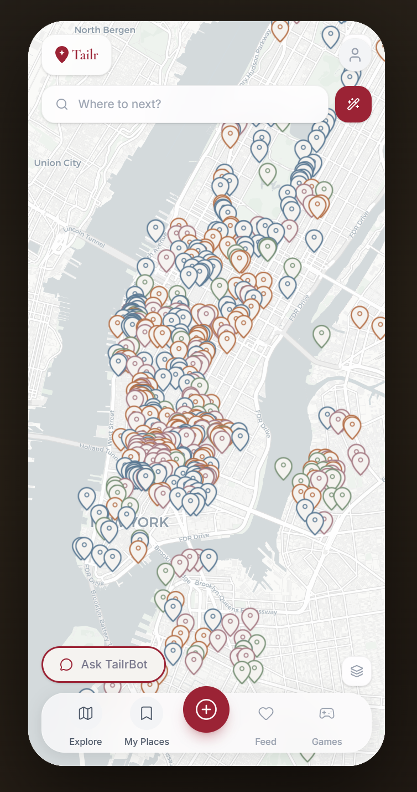

City discovery is high-intent, but low-efficiency
3+apps users juggle before deciding where to go
Lowcontext in generic "top places" lists
Highfriction for friend-trusted recommendations
Risingdemand for personalized local experiences
Core user pain
- Users switch between maps, social feeds, and booking sites.
- Discovery lacks "vibe" and neighborhood nuance.
- Recommendations are hard to organize, compare, and act on.
Tailr hypothesis
- Blend map + social + AI in one product loop.
- Replace hard filters with conversational intent.
- Use playful mechanics to improve retention.
What Tailr Delivers
1
Intent Capture
User asks in natural language, such as "cozy bars in Williamsburg".
UI position: top search + Ask TailrBot2
Intent Parsing
System extracts category, vibe, and neighborhood from free text.
AI role: semantic understanding3
Retrieval and Ranking
Candidate venues are searched and ranked by contextual relevance.
UI position: map pins + suggestion cards4
Action Layer
TailrBot guides next actions like save, directions, and booking intent.
UI position: chat actions + decision flow
User impact from this pipeline
Faster decisions
Users move from vague intent to actionable places in fewer steps.
Higher relevance
Neighborhood and vibe context outperform rigid filter combinations.
Personalization-ready
Pipeline can evolve into memory and long-term preference learning.
System design and delivery
Technical stack
- Frontend: React + TypeScript with mobile-app interaction patterns.
- Data layer: REST API for places, social graph, and interactions.
- Map: Leaflet-based geospatial place visualization.
- State and caching: React Query mutation/query lifecycle.
- Presentation deployment: static HTML on GitHub Pages.
Delivery story
Define problem
Fragmented local discovery and weak personalization.
Build MVP
Map + social + swipe + AI assistant in one coherent flow.
Validate usability
Stress-test key journeys: discover, save, ask, act.
Package for demo
Hostable static presentation and live app walkthrough.
What works well vs. what needs iteration
Observed strengths
- Unified journey from "discover" to "act".
- TailrBot flow feels natural for place exploration.
- Swipe + social loops create a sticky product rhythm.
Current limitations
- Cold-start still hard for new users and less-known areas.
- Limited scope for broad city-to-city generalization.
- Need deeper outcome metrics for recommendation quality.
Strongexperience cohesion
Promisingconversational discovery
Earlyformal evaluation depth
Nextmulti-city scalability
Responsible AI and platform governance
Risk Area
What can go wrong
Priority
Bias in recommendations
Popular places get over-amplified; niche communities get ignored.
High
AI transparency
Users may not know which suggestions are AI-ranked.
High
Content trust
Fake reviews or coordinated manipulation can distort quality.
High
Privacy and location data
Sensitive behavioral signals require strict access controls.
High
Safety moderation
User-generated media and comments need policy enforcement.
Core
Next 12-24 months
1) Better personalization
Improve intent understanding and add long-term user taste memory.
2) Stronger evaluation loop
Run A/B tests on recommendation relevance, conversion, and retention.
3) Geographic expansion
Scale beyond NYC with city-specific data quality and moderation controls.
4) Trust and economics
Develop credibility scoring, anti-spam systems, and sustainable unit economics.
Personalized city graph
Explainable recommendations
Marketplace-ready model
Safety by design
Tailr in one line
Tailr combines social context, map intelligence, and conversational AI to make local discovery more personal, more actionable, and more fun.
Open Live Demo